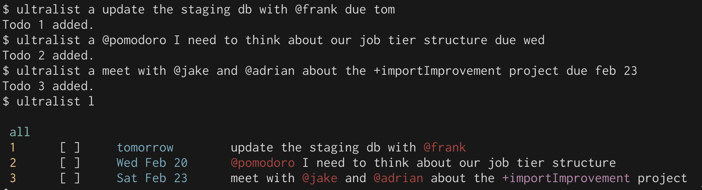

Using the Ultralist CLI
Adding todos
Add a todo by running ultralist add or ultralist a, and then filling out the details of the todo.
A +project or @context can be inserted into the todo body. Currently they can only be one word long.
ultralist expects the due date at the end, if there is a due date.
Due date format
For things due today or tomorrow, you can use due today and due tomorrow. You can also use due tod or due tom.
For things due this week, you can use the first 3 letters of the day name. For instance, due mon or due thu. ultralist will always look forward. If today is a Wednesday and you specify due mon, the due date will be for next Monday.
For specific dates, you can use either due may 2 or due 2 may. The month is always lowercase and 3 letters.
Examples

Completing/Uncompleting todos
ultralist complete [id]orultralist c [id]- complete a todoultralist uncomplete [id]orultralist uc [id]- un-complete a todo
Archiving/Unarchiving todos
ultralist archive [id]orultralist ar [id]- archive a todoultralist unarchive [id]orultralist uar [id]- unarchive a todo
Prioritizing/Unprioritizing todos
ultralist archive [id]orultralist ar [id]- archive a todoultralist unarchive [id]orultralist uar [id]- unarchive a todo
Deleting todos
ultralist delete [id] or ultralist d [id] will do the job.
Be careful! once a todo is deleted, it's gone forever!
Editing todos
You can edit a todo's subject or due date The syntax is as follows:
ultralist e [id] <subject> <due [due]>
Editing a todo's subject
When if you do not include due [date], then just the subject will be edited.
Example: ultralist e 3 chat with +bob will edit just the todo's subject, and leave the due date alone.
Editing a todo's due date
If you only pass due [date], the todo's due date will be updated, and the subject will remain the same.
Example: ultralist e 3 due tom will set the todo item with id of 3's due date to tomorrow, and it will leave the subject alone.
Removing a todo's due date
You can also say due none to un-set an existing due date.
Example: ultralist e 3 due none.
Todo List management
Creating a todolist
You can initialize a todolist by running ultralist init. This will create a .todos.json in the directory you are in.
The todolist in your home directory is special. ultralist will use the list in your home dir if it does not see a .todos.json in the directory you are in. This allows you to manage your main todolist file even if you are in another directory.
Listing, filtering and grouping todos
ultralist can list todos in a variety of ways, and allows for powerful filtering and grouping.
Basic listing
ultralist listorultralist l- List all unarchived todos.ultralist l archived- List archived todos.
By default, when listing todos, archived todos will be filtered out. You must explicitly pass l archived to see archived todos.
Filtering todos by due date
Ultralist supports a variety of methods to show todos that are due on a certain date.
ultralist l due tod- show all todos due todayultralist l due tom- show all todos due tomorrowultralist l due this week- show all todos due this weekultralist l overdue- show all todos that are overdueultralist l due <mon|tue|wed|thu|fri|sat|sun>- show todos due on a specific day, looking forward
The agenda view
ultralist l agenda- Show all uncomplete todos due today or that are overdue. It does not show todos due in the future. This is a great view to use all the time!
Listing completed todos
ultralist l completed tod- show todos that were completed todayultralist l completed this week- show todos that were completed this week
Listing todos by project or context
ultralist l @pomodoro- show all todos with a context of@pomodoro.ultralist l +project- show all todos with a project of+project.
Remember, ultralist is a unix tool, just like any other. You can use grep to combine a complex listing with a filter.
Example: ultralist l due tom | grep @bob
Grouping
Todos can be grouped by project or context
ultralist l by projectorultralist l by p- List all todos, grouped by project.ultralist l by contextorultralist l by c- List all todos, grouped by context.
Real world examples of combining groups and listing filters
ultralist l agenda by project- This is the command I run every day. So often, in fact, I have an alias for it calledup.ultralist l by project due tom- Show all todos due tomorrow, and group them by projectultralist l completed tod- Look back at all the todos you completed today, and feel good about yourself.
Archiving completed todos
ultralist acwill archive all completed todos.
This is great to run at the end of your day. Since ultralist only lists todos that are unarchived by default, these archived todos will be off your main view.
Garbage collection
ultralist gcwill delete all archived todos.
This is a great thing to run weekly. You'll get a bunch of low ids back, and you'll keep your .todos.json file small.
.todos.json file format
ultralist stores todos in a very simple, self-explanitory format.
[{
"id": 110,
"subject": "+toVerify did @scott put zuora alerting in place?",
"projects": [
"toVerify"
],
"contexts": [
"scott"
],
"due": "2016-05-23",
"completed": false,
"completedAt": null,
"archived": false
}]